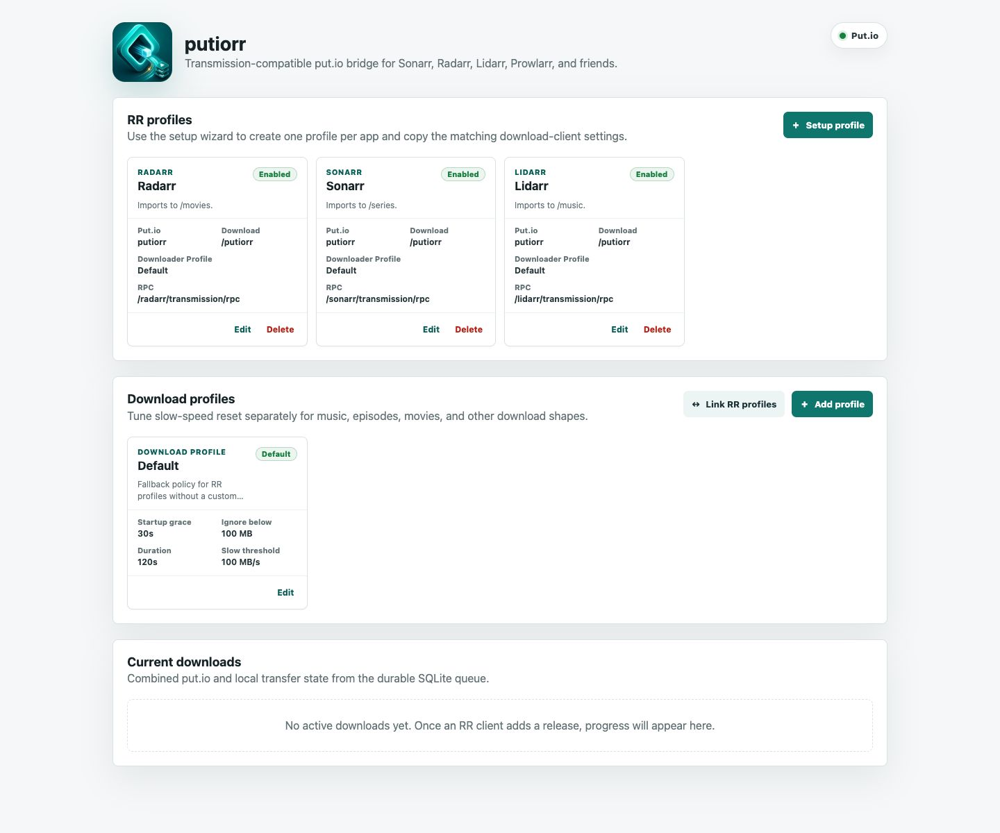
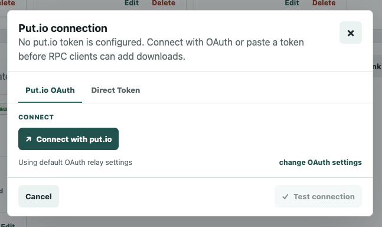
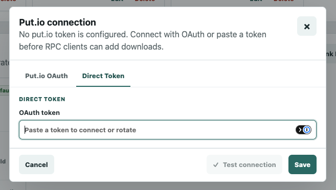
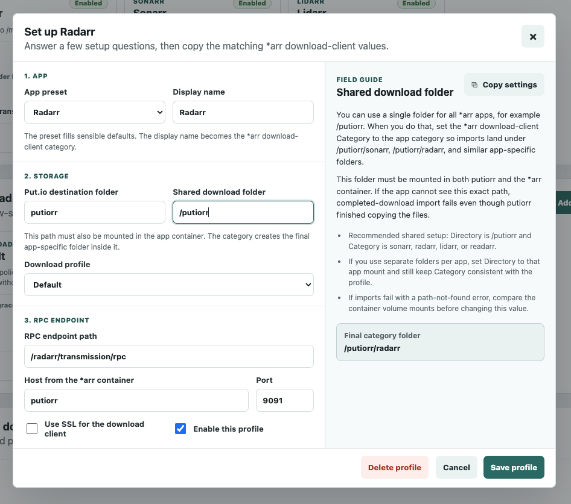
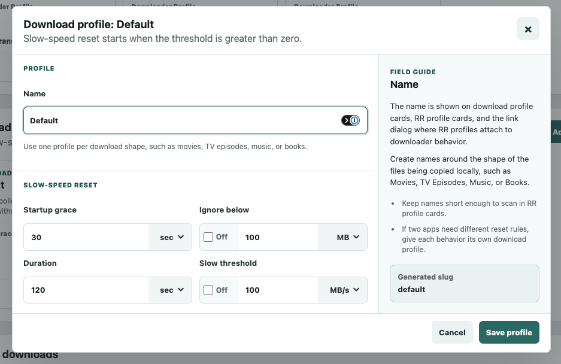
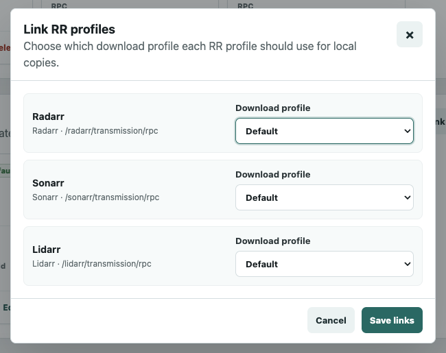
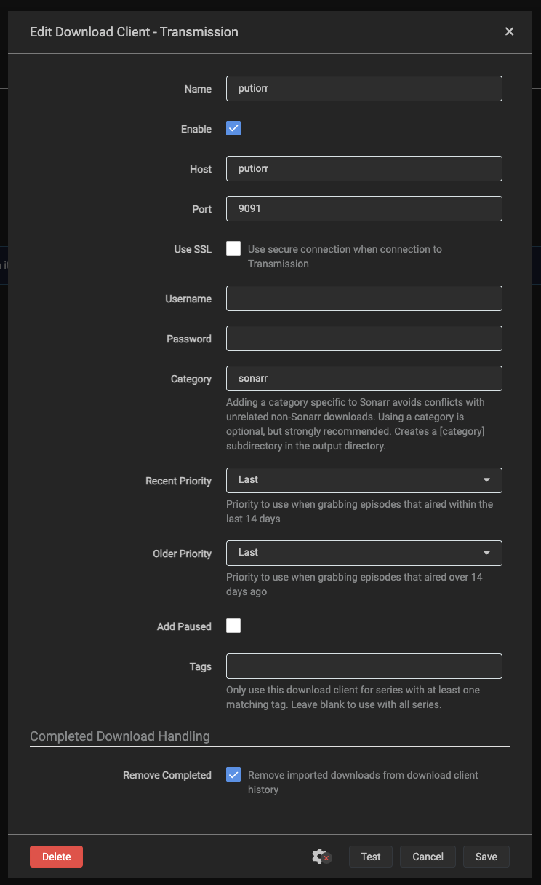

RadarrEnabled
Radarr
Imports to /movies.
- Put.io
- putiorr
- Download
- /downloads
- RPC
- /radarr/transmission/rpc
A stable put.io bridge for the *arr family.
putiorr presents a Transmission-compatible RPC endpoint to Sonarr, Radarr, Lidarr, Readarr, Prowlarr, and similar apps, then copies completed put.io files into the download target your importers already know.
Imports to /movies.
Imports to /series.
Remote transfers are created and prepared in put.io.
RPC requests look like Transmission to your *arr apps.
Completed files are copied to a shared local target.
Completed-download handling imports from the same mounted path.
Your media ends up organized in the normal library folders.
Current putiorr uses a topbar, clear profile cards, panel actions, and focused empty states.

The Put.io connection dialog keeps the default OAuth relay path simple, while still allowing a direct token paste or rotation when that fits the install.


The setup wizard explains the field you are editing, keeps app-specific defaults aligned, and shows the final category folder before you save.

Download profiles let each media shape use the right slow-speed reset policy, keeping large copies patient and small imports responsive.

The link dialog keeps every app-to-policy mapping in one place, so each RR profile can use the local-copy behavior that matches its workload.

Sonarr sees putiorr as a Transmission download client. When both containers share a Docker Compose network, the Host can be the putiorr service name.
putiorr inside the compose network.9091 and Category sonarr match the Sonarr RR profile defaults.
SQLite state keeps the bridge steady across restarts.
The static relay only returns the token to the user's putiorr instance.
Profiles map each app to its own RPC path and category.
Mount the same host folder at the same container path everywhere.
Delete-local-data and remote cleanup are handled intentionally.
Partial files resume with range requests after restarts.
Run putiorr near your *arr stack, share one download target mount, and point each app at its matching Transmission URL base.
services:
putiorr:
image: ghcr.io/ptheofan/putiorr:latest
restart: unless-stopped
volumes:
- /volume1/docker/putiorr-config:/data/putiorr-config
- /volume/downloads:/downloads/downloads.The hosted relay page is still the dedicated browser handoff for put.io OAuth flows.